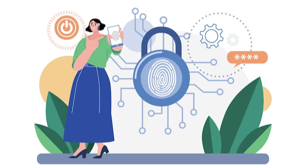
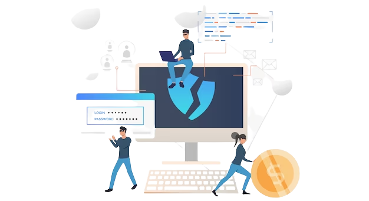

Email phishing attacks are becoming increasingly common, posing a severe threat to businesses and individuals alike. An email phishing attack is a form of fraud in which an attacker attempts to gain access to sensitive data, such as account credentials or financial information, by disguising themselves as a trustworthy source and sending malicious links or attachments via email. As such, it is important to take proactive steps in order to protect your business and personal data from phishing attacks. Follow this link to learn how to prevent phishing emails.
In this blog post, we will provide a comprehensive overview of how to stop phishing email attacks. We will discuss the various methods available to identify and prevent malicious emails, as well as the importance of maintaining a secure email system and staying abreast of the latest threats. We will also provide tips on how to detect and respond to phishing emails, as well as best practices for educating employees and colleagues about the risks of phishing.

Before we get into the steps to remedy the issue, let's take an overall look at what cause phishing is and why it's so challenging to counteract. Phishing is a broad term, and actually encompasses a wide range of ways that attackers attempt to trick your employees.
Phishing is an attempted robbery or acquisition of electronic details by fraudulent e-mails, tweets, SMS messages, ads, or websites that resemble the logos of trusted companies. By way of example, a phishing email could look as though it's from your bank and request private information about your bank account.
Spear-phishing is an advanced form of phishing that involves a hacker impersonating a trusted client. Hackers then contact the supposed sender, acting as if they mean him or her, and request account information, or invite them to make a payment.
These guys are often very successful at deceiving people because they may not believe that a trusted contact or a business they've worked with before could be an attacker in disguise. As a result of this, these types of attacks are quite productive for attackers.
Another type of phishing scam is called Business Email Compromise. This is a type of attack when an attacker spoofs an official email in order to obtain access to company account exfiltration encouraging other employees to make fraudulent purchases.
The most common first line of defense usability against phishing is one of the first Secure Email Gateways.

Email gateways are commonly used to filter malicious and harmful emails out of users' inboxes and keep them away from spamming users. A good email gateway will block 99.99 percent of spam emails and keep any email that contains any malicious links or attachments out of users' inboxes. This makes them indispensable in blocking users from receiving fraudulent phishing emails.
Having an email gateway is indispensable for firms of any size. There are a number of businesses providing reasonably priced, easy-to-use, and highly secure email gateways that will secure you from phishing attacks.
Sometimes hackers can send emails from inside an account, and this can set up an internal phishing rampage. IT administrators can be especially hard-pressed to stop security attacks for this reason. Email security solutions that are linked to a cloud through email APIs offer a comprehensive solution to this problem, with built-in antivirus protection features.
Email security defenses make it possible for websites to secure you against security risks within the inbox. They perform this function by detecting common characteristics of phishing emails and then applying these and related attributes to emails sent and compared against known examples. This will help these email defenses to find potentially suspicious messages.
On a final note, phishing attacks are one of the most common and effective cyber threats, and the best way to protect your organization from them is to be proactive. Invest in phishing protection solutions and regularly train your staff to recognize and report suspicious emails. Additionally, make sure to always back up your data, as it is the best way to recover from a phishing attack. With these measures in place, you can protect your business from phishing attacks and secure your data.